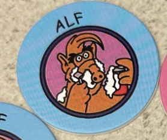
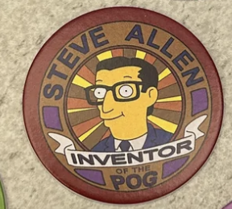
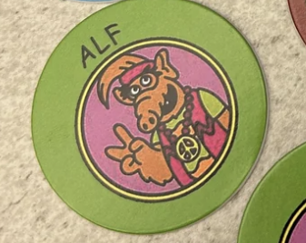
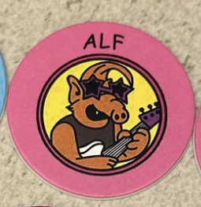
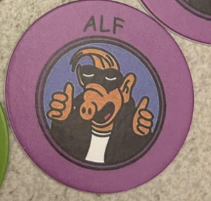

We Ranked Alf Pogs Based on How Many of Our Writers Would Smash
Article Published by Cameron at 1993/09/12 1:50 PM CET
It''s Alf, in pog form.
5. Shaving Alf

We prefer bush.
4. Steve Allen

He may have invented pogs, but he has nothing on the next bunch.
3. Hippie Alf

Sexy crop top, but presumably smokes weed and that's not D.A.R.E. approved.
2. Rockstar Alf

See this is what we're talking about. Hot, wild, and crazy. Rockstar Alf truly always delivers.
1. Cool Alf

Hey guys, did you know that in terms of male human and male alien vibing, Cool Alf is the most compatible alien for humans? Not only does he have dope ass shades, which is universally recognized as very rad, Cool Alf is 3"03' tall and 63.9 pounds. This means he's large enough to be able to handle awesome tunes, and with their impressive leather jacket and access to hair grease, you can be radical with one. Due to their mostly gnarly biology, there's no doubt in my mind that Cool Alf would be incredibly bodacious, so bodacious that you could easily have band seshes with one for hours without getting tired. He can also learn the Disco, Hammer Time, Worm, Sponge and Lectric Zoo along with not having ample fur for epic moves, so it'd be incredibly easy for him to get you in a groovy mood. With hus abilities to dance and jive, he can easily dance all night with no fatigue. No other alien comes close with this level of compatibility. Also, fun fact, if you dye his hair, you can make your Cool Alf turn white. Cool Alf is literally built for partying. Ungodly durability + high stamina + cool fit means he can dance all day, all night and still come for more.